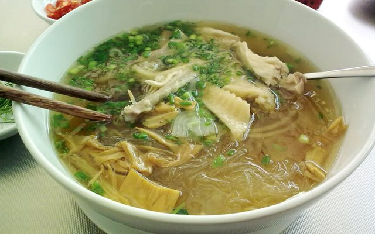

Miến

Miến hay bún tàu là loại thực phẩm dạng sợi khô, được chế biến từ bột gạo, bột dong, bột đậu xanh hoặc bột sắn, bán thành từng bó khoảng 1 lạng. Sợi miến làm từ bột dong thường ngon hơn: dai, trong, không "trương" lên trong lúc ăn. Nói chung, miến là một thứ đồ ăn khô sơ chế phổ biến trong các hàng quán ăn nhanh lẫn trong gia đình Việt Nam, chỉ đứng sau bún. Ở các thành phố lớn, miến cũng góp mặt trong các món ăn đường phố thông dụng như miến ngan, miến cua, miến lươn...